This post introduces how we can build different types of linear models and fit them to the data.
Author
Valerio Bonometti
Published
January 26, 2026
AI-assistedBug fixes, new GLMs and evaluation section by Claude
Show supplementary code
%load_ext watermarkimport numpy as npimport matplotlib.pyplot as pltfrom typing import Any, Callable, Dict, List, Tupleimport pandas as pdimport seaborn as snsimport jax.numpy as jnpfrom jax import jit, randomfrom jax.typing import ArrayLikefrom jax.tree_util import tree_mapfrom sklearn.calibration import calibration_curvefrom sklearn.metrics import confusion_matrixdef train_test_split( X: ArrayLike, y: ArrayLike, random_key: ArrayLike, test_size: float=0.2) -> Tuple[ArrayLike, ArrayLike, ArrayLike, ArrayLike]:"""Shuffle the data and hold out a fraction of it for testing. Args: X: input data with shape (n_samples, n_features). y: target data with n_samples along the first axis. random_key: key for pseudo-random number generator. test_size: fraction of the data held out for testing. Defaults to 0.2. Returns: X_train, X_test, y_train, y_test: the two splits of X and y. """ random_idx = random.permutation(random_key, X.shape[0]) X, y = X[random_idx], y[random_idx] n_test =int(X.shape[0] * test_size)return X[n_test:], X[:n_test], y[n_test:], y[:n_test]def momentum_gradient_descent( learning_rate: float, beta: float=0.9) -> Tuple[Callable, Callable, Callable]:"""Gradient descent with momentum, the optimizer introduced in the previous chapter. Args: learning_rate: step size applied to the gradients. beta: fraction of the previous update carried over to the current one. Defaults to 0.9. Returns: init_state, update_state, get_params: optimizer functions as expected by fit. """@jitdef init_state(params): previous_updates = tree_map(lambda param: jnp.zeros_like(param), params)return previous_updates, params@jitdef update_state(grads, current_state): previous_updates, previous_params = current_state current_updates = tree_map(lambda grad, previous_update: (beta * previous_update)+ (grad * learning_rate), grads, previous_updates, ) current_params = tree_map(lambda param, update: param - update, previous_params, current_updates )return current_updates, current_params@jitdef get_params(state): _, current_params = statereturn current_paramsreturn init_state, update_state, get_paramsdef absolute_error(y: ArrayLike, yhat: ArrayLike) -> ArrayLike:"""Compute the absolute error between ground truth values and predictions, i.e. the square root of the squared error. Args: y: ground truth values yhat: prediction values Returns: ae: absolute error between y and yhat """ ae = np.abs(np.asarray(y) - np.asarray(yhat))return aedef parameters_table( true_params: Dict[str, ArrayLike], estimated_params: Dict[str, ArrayLike]) -> pd.DataFrame:"""Put side by side the parameters used for generating the data and the ones estimated by the model. Args: true_params: parameters returned by the make_*_dataset functions. estimated_params: parameters returned by fit, a learned log_sigma is converted back to sigma. Returns: table: one row per parameter with true and estimated values. """ estimated_params =dict(estimated_params)if"log_sigma"in estimated_params: estimated_params["sigma"] = jnp.exp(estimated_params.pop("log_sigma")) rows = []for name, true_value in true_params.items(): true_value = np.ravel(true_value) estimated_value = np.ravel(estimated_params[name])for i, (true_i, estimated_i) inenumerate(zip(true_value, estimated_value)): label =f"{name}[{i}]"if true_value.size >1else name rows.append({"parameter": label, "true": true_i, "estimated": estimated_i})return pd.DataFrame(rows).set_index("parameter").astype(float).round(3)def _plot_loss_history(ax: Any, history: List[Dict[str, float]], loss: str) ->None:"""Plot fitting and validation loss per epoch as returned by fit."""for key, label in [("fitting_loss", "Fitting"), ("validation_loss", "Validation")]: ax.plot([epoch[key] for epoch in history], label=label) ax.set_title("Loss") ax.set_ylabel(loss) ax.set_xlabel("Epoch") ax.grid(alpha=0.5) ax.legend()def visualize_continuous_regression_performance( predictions: ArrayLike, y_test: ArrayLike, loss: str, history: List[Dict[str, float]], figsize: Tuple[int, int] = (12, 4),) -> Any:"""Visualize loss history, predicted against observed values and the distribution of the absolute errors on the test set. Args: predictions: predicted values on the test set. y_test: observed values on the test set. loss: name of the loss, used as label for the y axis. history: per-epoch losses as returned by fit. figsize: size of the figure. Defaults to (12, 4). Returns: fig, axs: matplotlib figure and axes. """ predictions, y_test = np.ravel(predictions), np.ravel(y_test) ae = absolute_error(y=y_test, yhat=predictions) med_ae =round(float(np.median(ae)), 3) fig, axs = plt.subplots(1, 3, figsize=figsize) _plot_loss_history(ax=axs[0], history=history, loss=loss) lims = [min(y_test.min(), predictions.min()), max(y_test.max(), predictions.max())] axs[1].scatter(y_test, predictions, s=2, alpha=0.5) axs[1].plot(lims, lims, linestyle="--", c="k", label="$\\hat{y} = y$") axs[1].set_title("Predictive Performance") axs[1].set_ylabel(r"$\hat{y}$") axs[1].set_xlabel(r"$y$") axs[1].grid(alpha=0.5) axs[1].legend() sns.kdeplot(ae, ax=axs[2], cut=0) axs[2].axvline(med_ae, linestyle=":", c="r", label=f"Median AE \n{med_ae}") axs[2].set_title("Test Absolute Errors") axs[2].set_xlabel(r"$|y - \hat{y}|$") axs[2].set_ylabel("Density") axs[2].grid(alpha=0.5) axs[2].legend() plt.tight_layout()return fig, axsdef visualize_logistic_regression_performance( predictions: ArrayLike, y_test: ArrayLike, loss: str, history: List[Dict[str, float]], threshold: float=0.5, figsize: Tuple[int, int] = (12, 4),) -> Any:"""Visualize loss history, calibration curve and confusion matrix on the test set. Args: predictions: predicted probabilities on the test set. y_test: observed binary values on the test set. loss: name of the loss, used as label for the y axis. history: per-epoch losses as returned by fit. threshold: probability above which a prediction counts as 1. Defaults to 0.5. figsize: size of the figure. Defaults to (12, 4). Returns: fig, axs: matplotlib figure and axes. """ predictions, y_test = np.ravel(predictions), np.ravel(y_test).astype(int) frac_pos, mean_pred = calibration_curve(y_test, predictions, n_bins=5)# rows are the ground truth, columns the predictions, each row sums to 1 cm = confusion_matrix( y_test, (predictions > threshold).astype(int), labels=[0, 1], normalize="true" ) fig, axs = plt.subplots(1, 3, figsize=figsize) _plot_loss_history(ax=axs[0], history=history, loss=loss) axs[1].plot( mean_pred, frac_pos, marker="o", ) axs[1].plot([0, 1], [0, 1], linestyle="--", c="k") axs[1].set_title("Calibration Curve") axs[1].set_xlabel("Estimated p") axs[1].set_ylabel("Fraction p=1") axs[1].grid(alpha=0.5) sns.heatmap(cm, cmap="Blues", annot=True, fmt=".2f", vmin=0, vmax=1, ax=axs[2]) axs[2].set_title("Confusion Matrix") axs[2].set_xlabel("Prediction") axs[2].set_ylabel("Ground Truth") plt.tight_layout()return fig, axs
def ones(init_state: Tuple[Tuple[int, ...], Any], random_key: ArrayLike) -> ArrayLike:"""Initialize with a constant value of one. Args: init_state: state variable used for initialisation, a tuple with shape values is always expected. random_key: key for pseudo-random number generator. Returns: params: values returned as initial values for parameters. """ params_shape, _ = init_state params = jnp.ones(shape=params_shape)return paramsparameters = ones(init_state=((100,), None), random_key=KEY)fig, ax = visualize_parameters(parameters)ax.set_title("Ones")
Text(0.5, 1.0, 'Ones')
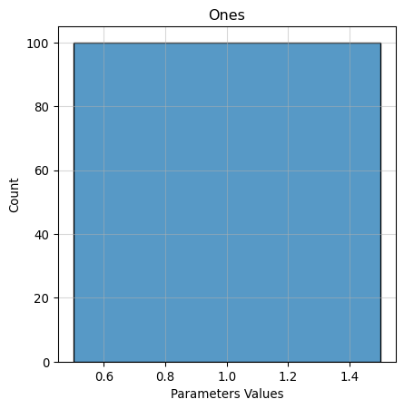
def zeros(init_state: Tuple[Tuple[int, ...], Any], random_key: ArrayLike) -> ArrayLike:"""Initialize with a constant value of zero. Args: init_state: state variable used for initialisation, a tuple with shape values is always expected. random_key: key for pseudo-random number generator. Returns: params: values returned as initial values for parameters. """ params_shape, _ = init_state params = jnp.zeros(shape=params_shape)return paramsparameters = zeros(init_state=((100,), None), random_key=KEY)fig, ax = visualize_parameters(parameters)ax.set_title("Zeros")
Text(0.5, 1.0, 'Zeros')
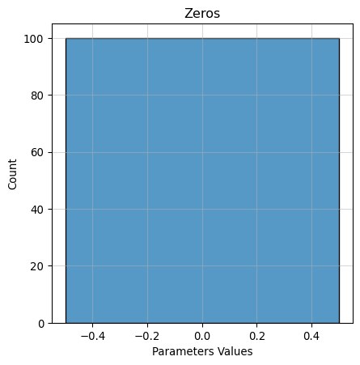
def random_uniform( init_state: Tuple[Tuple[int, ...], Any], random_key: ArrayLike, min_val: float=0.0, max_val: float=1.0,) -> ArrayLike:"""Initialize with random values sampled uniformly from min_val and max_val. Args: init_state: state variable used for initialisation, a tuple with shape values is always expected. random_key: key for pseudo-random number generator. min_val: lower boundary of the uniform distribution. max_val: upper boundary of the uniform distribution. Returns: params: values returned as initial values for parameters. """ params_shape, _ = init_state params = random.uniform( key=random_key, shape=params_shape, minval=min_val, maxval=max_val )return paramsparameters = random_uniform(init_state=((100,), None), random_key=KEY,min_val=-1., max_val=3.)fig, ax = visualize_parameters(parameters)ax.set_title("Random Uniform")
Text(0.5, 1.0, 'Random Uniform')
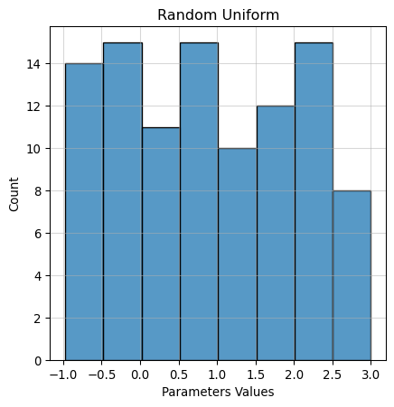
def random_gaussian( init_state: Tuple[Tuple[int, ...], Any], random_key: ArrayLike, sigma: float=0.1) -> ArrayLike:"""Initialize with random values sampled from a gaussian distribution with mean zero and standard deviation of sigma. Args: init_state: state variable used for initialisation, a tuple with shape values is always expected. random_key: key for pseudo-random number generator. sigma: standard deviation of the gaussian distribution. Returns: params: values returned as initial values for parameters. """ params_shape, _ = init_state params = random.normal(key=random_key, shape=params_shape) * sigmareturn paramsparameters = random_gaussian(init_state=((100,), None), random_key=KEY,sigma=1.)fig, ax = visualize_parameters(parameters)ax.set_title("Random Gaussian")
@jitdef linear(x: ArrayLike) -> ArrayLike:"""Activation function returning the identity of x Args: x: input to the activation function Returns: x: output of the activation function """return xx = np.linspace(-1, 1, 100)fig, ax = visualize_link_function(x=x, link_function=linear)ax.set_title("Linear Link")
Text(0.5, 1.0, 'Linear Link')
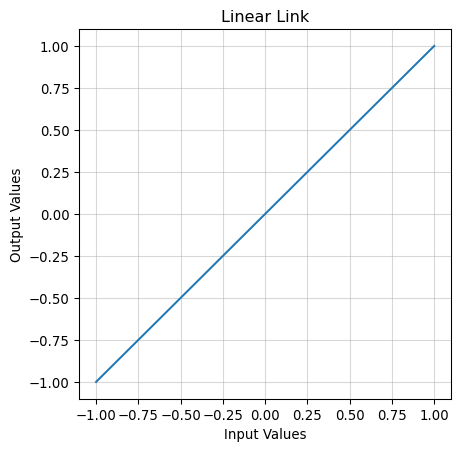
@jitdef sigmoid(x: ArrayLike) -> ArrayLike:"""Activation function transforming logits into probabilities (range 0, 1) The textbook form 1 / (1 + exp(-x)) overflows for large negative x and gives NaN gradients there, so we use the equivalent exp(-log(1 + exp(-x))) which stays finite everywhere. Args: x: input to the activation function Returns: x: output of the activation function """return jnp.exp(-jnp.logaddexp(0.0, -x))x = np.linspace(-5, 5, 100)fig, ax = visualize_link_function(x=x, link_function=sigmoid)ax.set_title("Sigmoid Link")
Text(0.5, 1.0, 'Sigmoid Link')
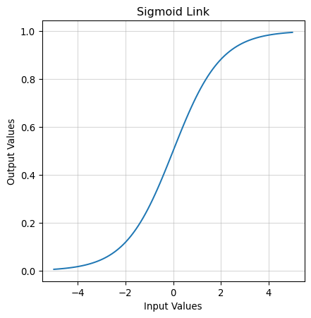
@jitdef tanh(x: ArrayLike) -> ArrayLike:"""Activation function returning the hyperbolic tangent of x (range -1, 1) The definition (exp(x) - exp(-x)) / (exp(x) + exp(-x)) evaluates to inf / inf = NaN for large |x|, so we use the identity tanh(x) = 2 * sigmoid(2x) - 1. Args: x: input to the activation function Returns: x: output of the activation function """return2* sigmoid(x=2* x) -1x = np.linspace(-5, 5, 100)fig, ax = visualize_link_function(x=x, link_function=tanh)ax.set_title("Tanh Link")
Text(0.5, 1.0, 'Tanh Link')
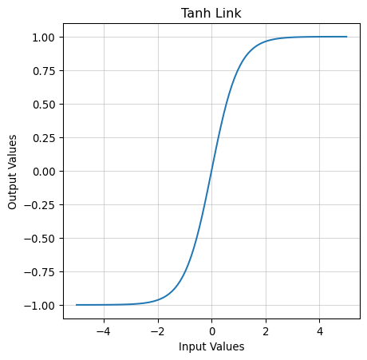
@jitdef softmax(x: ArrayLike) -> ArrayLike:"""Activation function transforming a vector of logits into probabilities summing to one along the last axis (range 0, 1) Subtracting the maximum logit leaves the result unchanged but prevents exp from overflowing for large logits. Args: x (array): input to the activation function Returns: x: output of the activation function """ z = x - jnp.max(x, axis=-1, keepdims=True)return jnp.exp(z) / jnp.sum(jnp.exp(z), axis=-1, keepdims=True)# three classes: the first logit varies along x, the other two are fixedx = np.linspace(-5, 5, 100)logits = np.stack([x, np.zeros_like(x), np.full_like(x, 2.0)], axis=1)fig, ax = plt.subplots(1, 1, figsize=(5, 5))ax.plot(x, softmax(x=logits), label=["logit 1 = x", "logit 2 = 0", "logit 3 = 2"])ax.set_xlabel("Logit 1 Value")ax.set_ylabel("Class Probability")ax.grid(alpha=0.5)ax.legend()ax.set_title("Softmax Link")
Text(0.5, 1.0, 'Softmax Link')
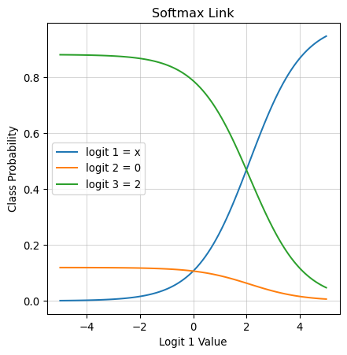
@jitdef relu(x: ArrayLike) -> ArrayLike:"""Activation function returning the maximum between 0 and x (range 0, inf) Args: x: input to the activation function Returns: array: output of the activation function """return jnp.maximum(0, x)x = np.linspace(-1, 1, 100)fig, ax = visualize_link_function(x=x, link_function=relu)ax.set_title("ReLU Link")
Text(0.5, 1.0, 'ReLU Link')
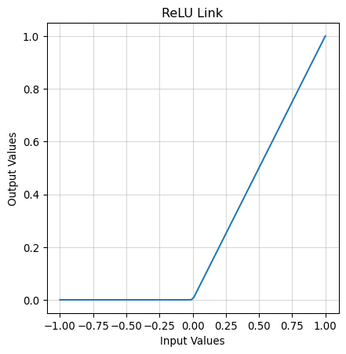
@jitdef leaky_relu(x: ArrayLike, alpha: float=0.1) -> ArrayLike:"""Activation function returning x for x >= 0 and alpha * x otherwise (range -inf, inf) Args: x: input to the activation function alpha: scaler for the negative part. Returns: array: output of the activation function """return jnp.where(x >=0, x, alpha * x)x = np.linspace(-1, 1, 100)fig, ax = visualize_link_function(x=x, link_function=leaky_relu)ax.set_title("Leaky ReLU Link")
Text(0.5, 1.0, 'Leaky ReLU Link')
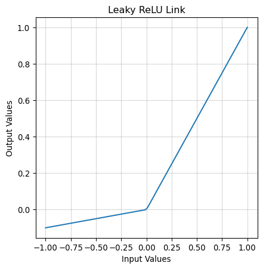
@jitdef elu(x: ArrayLike, alpha: float=1.) -> ArrayLike:"""Activation function that will return x if x >= 0 alpha * (exp(x) - 1) if x < 0 jnp.where evaluates (and differentiates) both branches for every x, so exp(x) must not overflow even where its branch is discarded: an inf there turns the gradient into NaN. Clamping x to be <= 0 inside the exponential avoids this, and expm1 computes exp(x) - 1 accurately near zero. Args: x: input to the activation function alpha: scaler for the negative part. Returns: array: output of the activation function """return jnp.where( x >=0, x, alpha * jnp.expm1(jnp.minimum(x, 0.0)) )x = np.linspace(-5, 1, 100)fig, ax = visualize_link_function(x=x, link_function=elu)ax.set_title("Elu Link")
Text(0.5, 1.0, 'Elu Link')
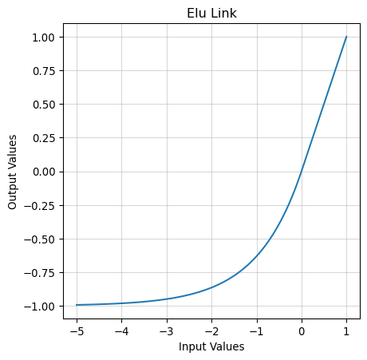
@jitdef swish(x: ArrayLike, alpha: float=1.5) -> ArrayLike:"""Activation function that will return x * sigmoid(x * alpha) Args: x: input to the activation function alpha: slope of the sigmoid gate (often called beta), larger values make swish closer to ReLU. Returns: array: output of the activation function """return x * sigmoid(x=x*alpha)x = np.linspace(-10, 10, 100)fig, ax = visualize_link_function(x=x, link_function=swish)ax.set_title("Swish Link")
Text(0.5, 1.0, 'Swish Link')
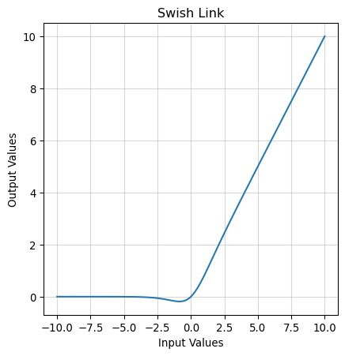
4 Model Fitting Routines
from typing import Dict, List, Optionalfrom functools import partialfrom tqdm import tqdmclass EarlyStopping:def__init__(self, tol: int=10, min_delta: float=1e-8):"""Naive implementation of an early stopping callback. Args: tol: number of consecutive iterations without improvement before triggering the stop criteria. Defaults to 10. min_delta: minimum decrease in loss, with respect to the best loss seen so far, required for considering an iteration an improvement. Defaults to 1e-8. """self.tol = tolself.min_delta = min_deltaself.reset()def reset(self) ->None:"""Restore the initial state so the same instance can be re-used across fits."""self.best_loss =float("inf")self.count =0self.improved =Falseself.stop =Falsedef evaluate(self, current_loss: float) ->bool:"""Update the state of the callback given the most recent loss. Args: current_loss: loss value obtained at the current iteration. Returns: stop: True if the loss has not improved for `tol` consecutive iterations. """ current_loss =float(current_loss)self.improved = (self.best_loss - current_loss) >self.min_deltaifself.improved:self.best_loss = current_lossself.count =0else:self.count +=1self.stop =self.count >=self.tolreturnself.stopdef shuffle_arrays(list_arrays: List[ArrayLike], random_key: ArrayLike) -> List[ArrayLike]:"""Shuffle a list of arrays along their first axis, applying the same permutation to all of them so that rows stay aligned. Args: list_arrays: arrays sharing the same size along the first axis. random_key: key for pseudo-random number generator. Returns: shuffled_arrays: the arrays in list_arrays with permuted rows. """ random_idx = random.permutation(random_key, list_arrays[0].shape[0])return [array[random_idx] for array in list_arrays]def create_batches( X: ArrayLike, y: ArrayLike, random_key: ArrayLike, batch_size: Optional[int] =None) -> Tuple[List[ArrayLike], List[ArrayLike]]:"""Shuffle X and y and split them into mini-batches. Args: X: input data with shape (n_samples, n_features). y: target data with n_samples along the first axis. random_key: key for pseudo-random number generator used for shuffling. batch_size: size of each batch of data. If None the whole data is used as a single batch. When n_samples is not a multiple of batch_size the remainder is spread across batches. Defaults to None. Returns: X_batched, y_batched: lists of batches of X and y. """if batch_size isNone:return [X], [y] X, y = shuffle_arrays(list_arrays=[X, y], random_key=random_key) n_batches =max(X.shape[0] // batch_size, 1)return jnp.array_split(X, n_batches), jnp.array_split(y, n_batches)def fit_step( X: ArrayLike, y: ArrayLike, backward: Callable, current_state: Tuple[Any, ...], update_state: Callable, get_params: Callable, random_state: ArrayLike,) -> Tuple[ArrayLike, Tuple[Any, ...], Any]:"""Perform a single optimization step on one batch of data. Args: X: input data. y: target data. backward: function returning loss and gradients given X, y and params. current_state: current state of the optimizer. update_state: function updating the optimizer state given the gradients. get_params: function extracting the parameters from the optimizer state. random_state: key for pseudo-random number generator. Returns: loss, current_state, grads: loss before the update, updated optimizer state and gradients used for the update. """ current_params = get_params(state=current_state) loss, grads = backward( X=X, y=y, current_params=current_params, random_state=random_state ) current_state = update_state(grads, current_state)return loss, current_state, gradsdef fit_step_on_batch( X: List[ArrayLike], y: List[ArrayLike], backward: Callable, current_state: Tuple[Any, ...], update_state: Callable, get_params: Callable, random_state: ArrayLike,) -> Tuple[ArrayLike, Tuple[Any, ...], Any]:"""Perform one optimization step per batch, i.e. a full epoch. Args: X: list of batches of input data. y: list of batches of target data. backward: function returning loss and gradients given X, y and params. current_state: current state of the optimizer. update_state: function updating the optimizer state given the gradients. get_params: function extracting the parameters from the optimizer state. random_state: key for pseudo-random number generator. Returns: loss, current_state, grads: loss averaged across batches (weighted by batch size), updated optimizer state and gradients of the last batch. """ partialized_fit_step = partial( fit_step, backward=backward, update_state=update_state, get_params=get_params, ) batch_keys = random.split(random_state, len(X)) total_loss, n_samples =0.0, 0for X_batch, y_batch, batch_key inzip(X, y, batch_keys): loss, current_state, grads = partialized_fit_step( X=X_batch, y=y_batch, current_state=current_state, random_state=batch_key, ) total_loss += loss * X_batch.shape[0] n_samples += X_batch.shape[0]return total_loss / n_samples, current_state, gradsdef fit( X: ArrayLike, y: ArrayLike, backward: Callable, compute_loss: Callable, start_params: Any, optimizer: Tuple[Callable, Callable, Callable], epochs: int, stopper: EarlyStopping, batch_size: Optional[int] =None, verbose: int=0, random_key: int=666, track_grads: bool=False, validation_size: float=.2):"""Fit a model to the data, using a hold-out set for early stopping. Args: X: input data with shape (n_samples, n_features). y: target data with n_samples along the first axis. backward: function returning loss and gradients given X, y and params. compute_loss: function returning the loss given X, y and params, used on the validation set where gradients are not needed. start_params: initial values of the parameters. optimizer: tuple of (init_state, update_state, get_params) functions. epochs: maximum number of passes over the data. stopper: early stopping callback evaluated on the validation loss. batch_size: size of each batch of data, None for full-batch. Defaults to None. verbose: show a progress bar updated every `verbose` epochs, 0 disables it. Defaults to 0. random_key: seed for the pseudo-random number generator. Defaults to 666. track_grads: whether to store the gradients at every epoch. Defaults to False. validation_size: fraction of the data held out for validation. Defaults to .2. Returns: params, history (, grads_history): parameters achieving the lowest validation loss, per-epoch fitting and validation losses and, if track_grads is True, per-epoch gradients. """ n_validation =int(X.shape[0] * validation_size)ifnot0< n_validation < X.shape[0]:raiseValueError(f"validation_size={validation_size} leaves {n_validation} of {X.shape[0]} ""samples for validation, at least one sample is needed in each split." ) history = [] grads_history = [] random_state = random.PRNGKey(random_key) stopper.reset()# shuffle once before splitting so the validation set is not just the# last rows of (possibly ordered) data random_state, split_key = random.split(random_state) X, y = shuffle_arrays(list_arrays=[X, y], random_key=split_key) X_fitting, X_validation = X[n_validation:], X[:n_validation] y_fitting, y_validation = y[n_validation:], y[:n_validation] init_state, update_state, get_params = optimizer current_state = init_state(params=start_params) best_params = get_params(state=current_state) pbar = tqdm(range(epochs), desc="Loss", disable=verbose ==0)for epoch in pbar: random_state, batches_key, step_key, validation_key = random.split(random_state, 4) X_fitting_batched, y_fitting_batched = create_batches( X=X_fitting, y=y_fitting, random_key=batches_key, batch_size=batch_size, ) loss, current_state, grads = fit_step_on_batch( X=X_fitting_batched, y=y_fitting_batched, backward=backward, current_state=current_state, update_state=update_state, get_params=get_params, random_state=step_key, ) validation_loss = compute_loss( X=X_validation, y=y_validation, current_params=get_params(state=current_state), random_state=validation_key, ) history.append( {"fitting_loss": float(loss), "validation_loss": float(validation_loss)} )if track_grads: grads_history.append(grads)if verbose and epoch % verbose ==0: pbar.set_description(f"Loss {float(loss):.4f} - Validation Loss {float(validation_loss):.4f}" ) stop = stopper.evaluate(current_loss=validation_loss)if stopper.improved: best_params = get_params(state=current_state)if stop:breakif track_grads:return best_params, history, grads_historyelse:return best_params, history
5 Losses
from jax.tree import leavesfrom jax.scipy.stats import norm, bernoulli, poisson@jitdef l1(params: Any) -> ArrayLike:"""L1 (lasso) penalty: sum of the absolute values of all the parameters. Args: params: pytree (e.g. dictionary) of parameters. Returns: l1_loss: the penalty value. """ l1_loss =sum([jnp.sum(jnp.abs(leaf)) for leaf in leaves(params)])return l1_loss@jitdef l2(params: Any) -> ArrayLike:"""L2 (ridge) penalty: sum of the squared values of all the parameters. Args: params: pytree (e.g. dictionary) of parameters. Returns: l2_loss: the penalty value. """ l2_loss =sum([jnp.sum(jnp.square(leaf)) for leaf in leaves(params)])return l2_lossdef get_regularizer(reg_type: str) -> Callable:"""Return the regularization penalty matching a string identifier. Args: reg_type: either "l1" (lasso) or "l2" (ridge). Returns: reg_function: the corresponding penalty function. """if reg_type notin REGULARIZERS:raiseValueError(f"reg_type must be one of {list(REGULARIZERS)}, got {reg_type!r}" )return REGULARIZERS[reg_type]@jitdef gaussian_nll(y: ArrayLike, yhat: Tuple[ArrayLike, ArrayLike]) -> ArrayLike:"""Negative log-likelihood of y under a gaussian distribution. Args: y: observed values. yhat: tuple with the predicted mean and standard deviation. Returns: nll: the negative log-likelihood averaged over observations, so that losses on sets of different size are comparable. """ mu, sigma = yhat# match the prediction shape, an (n, 1) y against an (n,) prediction# would otherwise silently broadcast to (n, n) y = jnp.reshape(y, mu.shape) ll = norm.logpdf(y, mu, sigma)return-jnp.mean(ll)@jitdef bernoulli_nll(y: ArrayLike, yhat: ArrayLike, eps: float=1e-7) -> ArrayLike:"""Negative log-likelihood of y under a bernoulli distribution. Args: y: observed binary values. yhat: predicted probabilities of y being 1. eps: probabilities are clipped to [eps, 1 - eps] for avoiding log(0). It must be representable in float32, where 1 - 1e-10 == 1. Defaults to 1e-7. Returns: nll: the negative log-likelihood averaged over observations, so that losses on sets of different size are comparable. """ y = jnp.reshape(y, yhat.shape) p = jnp.clip(yhat, eps, 1- eps) ll = bernoulli.logpmf(y, p)return-jnp.mean(ll)@jitdef poisson_nll(y: ArrayLike, yhat: ArrayLike) -> ArrayLike:"""Negative log-likelihood of y under a poisson distribution. Args: y: observed counts. yhat: predicted (strictly positive) rates. Returns: nll: the negative log-likelihood averaged over observations, so that losses on sets of different size are comparable. """ y = jnp.reshape(y, yhat.shape) ll = poisson.logpmf(y, yhat)return-jnp.mean(ll)REGULARIZERS = {"l1": l1, "l2": l2}
6 Generalized Linear Models
6.1 Gaussian GLM
6.1.1 Model Definition
from jax import value_and_graddef gaussian_linear_model( weights_init_method: Callable, bias_init_method: Callable, prngkey: ArrayLike, reg_type: str="l2", reg_strength: float=1e-3,) -> Tuple[Callable, Callable, Callable, Callable]:"""Linear regression: a linear model with a gaussian likelihood and an identity inverse link. The noise standard deviation is learned together with weights and bias. Args: weights_init_method: initializer for the weights. bias_init_method: initializer for the bias. prngkey: key for pseudo-random number generator used for initialisation. reg_type: penalty applied to the weights (not the bias nor the noise), either "l1" (lasso) or "l2" (ridge). Defaults to "l2". reg_strength: multiplier of the regularization penalty. As the likelihood term is averaged over observations, this is the penalty per observation. Defaults to 1e-3. Returns: init_params, forward, compute_loss, backward: functions for initialising the parameters, computing predictions, computing the loss and computing loss and gradients. """ reg_function = get_regularizer(reg_type)@jitdef init_params(X: ArrayLike) -> Dict[str, ArrayLike]:"""Initialize weights, bias and noise standard deviation. The standard deviation must be positive, so we learn its logarithm, which is unconstrained, starting from log(1) = 0. Args: X: input data with shape (n_samples, n_features). Returns: params: dictionary with weights of shape (n_features,), bias of shape (1,) and log_sigma of shape (1,). """ weights_key, bias_key = random.split(prngkey) params = {"weights": weights_init_method( init_state=((X.shape[1],), None), random_key=weights_key ),"bias": bias_init_method(init_state=((1,), None), random_key=bias_key),"log_sigma": jnp.zeros(shape=(1,)), }return params@jitdef forward( X: ArrayLike, current_params: Dict[str, ArrayLike], random_state: ArrayLike ) -> Tuple[ArrayLike, ArrayLike]:"""Compute the predicted mean and standard deviation. Args: X: input data with shape (n_samples, n_features). current_params: dictionary of parameters. random_state: key for pseudo-random number generator (unused, kept for API compatibility with stochastic models). Returns: yhat: tuple with the predicted means, shape (n_samples,), and the (strictly positive) standard deviation, shape (1,). """ theta = jnp.dot(X, current_params["weights"]) + current_params["bias"] mu = linear(theta) sigma = jnp.exp(current_params["log_sigma"])return mu, sigma@jitdef compute_loss( X: ArrayLike, y: ArrayLike, current_params: Dict[str, ArrayLike], random_state: ArrayLike, ) -> ArrayLike:"""Compute the regularized negative log-likelihood. Args: X: input data with shape (n_samples, n_features). y: real-valued targets with n_samples along the first axis. current_params: dictionary of parameters. random_state: key for pseudo-random number generator. Returns: loss: negative log-likelihood plus the penalty on the weights. """ yhat = forward(X=X, current_params=current_params, random_state=random_state) raw_loss = gaussian_nll(y=y, yhat=yhat) reg_loss = reg_function(params=current_params["weights"]) * reg_strengthreturn raw_loss + reg_loss@jitdef backward( X: ArrayLike, y: ArrayLike, current_params: Dict[str, ArrayLike], random_state: ArrayLike, ) -> Tuple[ArrayLike, Dict[str, ArrayLike]]:"""Compute the loss and its gradients with respect to the parameters. Args: X: input data with shape (n_samples, n_features). y: real-valued targets with n_samples along the first axis. current_params: dictionary of parameters. random_state: key for pseudo-random number generator. Returns: loss, grads: loss value and gradients with the same structure as current_params. """ grad_func = value_and_grad(lambda params: compute_loss( X=X, y=y, current_params=params, random_state=random_state ) ) loss, grads = grad_func(current_params)return loss, gradsreturn init_params, forward, compute_loss, backward
6.1.2 Fitting and Evaluation
def make_gaussian_dataset( random_key: ArrayLike, n_samples: int=2000, n_features: int=5, weight_scale: float=1.0, bias: float=0.5, sigma: float=1.0,) -> Tuple[ArrayLike, ArrayLike, Dict[str, ArrayLike]]:"""Generate data following the assumptions of the gaussian GLM: standard gaussian features and y ~ Normal(X @ weights + bias, sigma). Args: random_key: key for pseudo-random number generator. n_samples: number of observations. Defaults to 2000. n_features: number of features. Defaults to 5. weight_scale: standard deviation of the true weights. Defaults to 1.0. bias: true bias. Defaults to 0.5. sigma: standard deviation of the noise. Defaults to 1.0. Returns: X, y, true_params: features of shape (n_samples, n_features), target of shape (n_samples,) and the parameters used for generating y. """ X_key, weights_key, y_key = random.split(random_key, 3) X = random.normal(X_key, shape=(n_samples, n_features)) weights = random.normal(weights_key, shape=(n_features,)) * weight_scale theta = jnp.dot(X, weights) + bias y = linear(theta) + random.normal(y_key, shape=(n_samples,)) * sigma true_params = {"weights": weights, "bias": jnp.array([bias]), "sigma": jnp.array([sigma])}return X, y, true_params
def bernoulli_linear_model( weights_init_method: Callable, bias_init_method: Callable, prngkey: ArrayLike, reg_type: str="l2", reg_strength: float=1e-3,) -> Tuple[Callable, Callable, Callable, Callable]:"""Logistic regression: a linear model with a bernoulli likelihood and a sigmoid inverse link. Args: weights_init_method: initializer for the weights. bias_init_method: initializer for the bias. prngkey: key for pseudo-random number generator used for initialisation. reg_type: penalty applied to the weights (not the bias), either "l1" (lasso) or "l2" (ridge). Defaults to "l2". reg_strength: multiplier of the regularization penalty. As the likelihood term is averaged over observations, this is the penalty per observation. Defaults to 1e-3. Returns: init_params, forward, compute_loss, backward: functions for initialising the parameters, computing predictions, computing the loss and computing loss and gradients. """ reg_function = get_regularizer(reg_type)@jitdef init_params(X: ArrayLike) -> Dict[str, ArrayLike]:"""Initialize weights and bias. Args: X: input data with shape (n_samples, n_features). Returns: params: dictionary with weights of shape (n_features,) and bias of shape (1,). """ weights_key, bias_key = random.split(prngkey) params = {"weights": weights_init_method( init_state=((X.shape[1],), None), random_key=weights_key ),"bias": bias_init_method(init_state=((1,), None), random_key=bias_key), }return params@jitdef forward( X: ArrayLike, current_params: Dict[str, ArrayLike], random_state: ArrayLike ) -> ArrayLike:"""Compute the predicted probabilities. Args: X: input data with shape (n_samples, n_features). current_params: dictionary of parameters. random_state: key for pseudo-random number generator (unused, kept for API compatibility with stochastic models). Returns: yhat: predicted probabilities with shape (n_samples,). """ theta = jnp.dot(X, current_params["weights"]) + current_params["bias"] yhat = sigmoid(theta)return yhat@jitdef compute_loss( X: ArrayLike, y: ArrayLike, current_params: Dict[str, ArrayLike], random_state: ArrayLike, ) -> ArrayLike:"""Compute the regularized negative log-likelihood. Args: X: input data with shape (n_samples, n_features). y: binary targets with n_samples along the first axis. current_params: dictionary of parameters. random_state: key for pseudo-random number generator. Returns: loss: negative log-likelihood plus the penalty on the weights. """ yhat = forward(X=X, current_params=current_params, random_state=random_state) raw_loss = bernoulli_nll(y=y, yhat=yhat) reg_loss = reg_function(params=current_params["weights"]) * reg_strengthreturn raw_loss + reg_loss@jitdef backward( X: ArrayLike, y: ArrayLike, current_params: Dict[str, ArrayLike], random_state: ArrayLike, ) -> Tuple[ArrayLike, Dict[str, ArrayLike]]:"""Compute the loss and its gradients with respect to the parameters. Args: X: input data with shape (n_samples, n_features). y: binary targets with n_samples along the first axis. current_params: dictionary of parameters. random_state: key for pseudo-random number generator. Returns: loss, grads: loss value and gradients with the same structure as current_params. """ grad_func = value_and_grad(lambda params: compute_loss( X=X, y=y, current_params=params, random_state=random_state ) ) loss, grads = grad_func(current_params)return loss, gradsreturn init_params, forward, compute_loss, backward
6.2.2 Fitting and Evaluation
def make_bernoulli_dataset( random_key: ArrayLike, n_samples: int=2000, n_features: int=5, weight_scale: float=1.0, bias: float=0.5,) -> Tuple[ArrayLike, ArrayLike, Dict[str, ArrayLike]]:"""Generate data following the assumptions of the bernoulli GLM: standard gaussian features and y ~ Bernoulli(sigmoid(X @ weights + bias)). Args: random_key: key for pseudo-random number generator. n_samples: number of observations. Defaults to 2000. n_features: number of features. Defaults to 5. weight_scale: standard deviation of the true weights. Defaults to 1.0. bias: true bias. Defaults to 0.5. Returns: X, y, true_params: features of shape (n_samples, n_features), binary target of shape (n_samples,) and the parameters used for generating y. """ X_key, weights_key, y_key = random.split(random_key, 3) X = random.normal(X_key, shape=(n_samples, n_features)) weights = random.normal(weights_key, shape=(n_features,)) * weight_scale theta = jnp.dot(X, weights) + bias y = random.bernoulli(y_key, p=sigmoid(theta)).astype(jnp.float32) true_params = {"weights": weights, "bias": jnp.array([bias])}return X, y, true_params
def poisson_linear_model( weights_init_method: Callable, bias_init_method: Callable, prngkey: ArrayLike, reg_type: str="l2", reg_strength: float=1e-3,) -> Tuple[Callable, Callable, Callable, Callable]:"""Poisson regression: a linear model with a poisson likelihood and an exponential inverse link, suited for count data. Args: weights_init_method: initializer for the weights. bias_init_method: initializer for the bias. prngkey: key for pseudo-random number generator used for initialisation. reg_type: penalty applied to the weights (not the bias), either "l1" (lasso) or "l2" (ridge). Defaults to "l2". reg_strength: multiplier of the regularization penalty. As the likelihood term is averaged over observations, this is the penalty per observation. Defaults to 1e-3. Returns: init_params, forward, compute_loss, backward: functions for initialising the parameters, computing predictions, computing the loss and computing loss and gradients. """ reg_function = get_regularizer(reg_type)@jitdef init_params(X: ArrayLike) -> Dict[str, ArrayLike]:"""Initialize weights and bias. Args: X: input data with shape (n_samples, n_features). Returns: params: dictionary with weights of shape (n_features,) and bias of shape (1,). """ weights_key, bias_key = random.split(prngkey) params = {"weights": weights_init_method( init_state=((X.shape[1],), None), random_key=weights_key ),"bias": bias_init_method(init_state=((1,), None), random_key=bias_key), }return params@jitdef forward( X: ArrayLike, current_params: Dict[str, ArrayLike], random_state: ArrayLike ) -> ArrayLike:"""Compute the predicted rates. Args: X: input data with shape (n_samples, n_features). current_params: dictionary of parameters. random_state: key for pseudo-random number generator (unused, kept for API compatibility with stochastic models). Returns: yhat: predicted (strictly positive) rates with shape (n_samples,). """ theta = jnp.dot(X, current_params["weights"]) + current_params["bias"] yhat = jnp.exp(theta)return yhat@jitdef compute_loss( X: ArrayLike, y: ArrayLike, current_params: Dict[str, ArrayLike], random_state: ArrayLike, ) -> ArrayLike:"""Compute the regularized negative log-likelihood. Args: X: input data with shape (n_samples, n_features). y: non-negative integer counts with n_samples along the first axis. current_params: dictionary of parameters. random_state: key for pseudo-random number generator. Returns: loss: negative log-likelihood plus the penalty on the weights. """ yhat = forward(X=X, current_params=current_params, random_state=random_state) raw_loss = poisson_nll(y=y, yhat=yhat) reg_loss = reg_function(params=current_params["weights"]) * reg_strengthreturn raw_loss + reg_loss@jitdef backward( X: ArrayLike, y: ArrayLike, current_params: Dict[str, ArrayLike], random_state: ArrayLike, ) -> Tuple[ArrayLike, Dict[str, ArrayLike]]:"""Compute the loss and its gradients with respect to the parameters. Args: X: input data with shape (n_samples, n_features). y: non-negative integer counts with n_samples along the first axis. current_params: dictionary of parameters. random_state: key for pseudo-random number generator. Returns: loss, grads: loss value and gradients with the same structure as current_params. """ grad_func = value_and_grad(lambda params: compute_loss( X=X, y=y, current_params=params, random_state=random_state ) ) loss, grads = grad_func(current_params)return loss, gradsreturn init_params, forward, compute_loss, backward
6.3.2 Fitting and Evaluation
def make_poisson_dataset( random_key: ArrayLike, n_samples: int=2000, n_features: int=5, weight_scale: float=0.3, bias: float=0.5,) -> Tuple[ArrayLike, ArrayLike, Dict[str, ArrayLike]]:"""Generate data following the assumptions of the poisson GLM: standard gaussian features and y ~ Poisson(exp(X @ weights + bias)). Args: random_key: key for pseudo-random number generator. n_samples: number of observations. Defaults to 2000. n_features: number of features. Defaults to 5. weight_scale: standard deviation of the true weights. Defaults to 0.3, smaller weights keep the counts in a reasonable range given the exponential link. bias: true bias. Defaults to 0.5. Returns: X, y, true_params: features of shape (n_samples, n_features), count target of shape (n_samples,) and the parameters used for generating y. """ X_key, weights_key, y_key = random.split(random_key, 3) X = random.normal(X_key, shape=(n_samples, n_features)) weights = random.normal(weights_key, shape=(n_features,)) * weight_scale theta = jnp.dot(X, weights) + bias y = random.poisson(y_key, lam=jnp.exp(theta)).astype(jnp.float32) true_params = {"weights": weights, "bias": jnp.array([bias])}return X, y, true_params